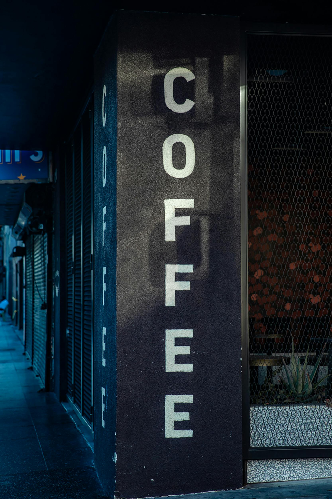

Only for coffee lover
Click here to reviewIndiginous Food
A variety of plant-based foods, such as fruit, vegetables, roots, flowers, grains, nuts, and seeds
Exploring Traditional Indigenous Foods and Healthy Eating
Three Sisters” refers to the main crops seen in many Native American nations throughout North America: corn, beans and squash.